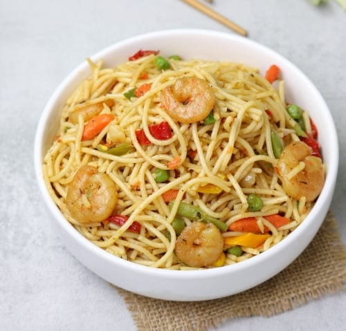

Fried Spaghetti

Description
Spaghetti is a type of pasta. It is long, thin and made of milled wheat. Other types of pasta are linguine and fettuccine, macaroni and many others. Spaghetti is probably my favourite of them followed by linguine.
My family loves spaghetti and it's always a delight when I cook it. If they can have their way, they'd want me making it every single day.
INGREDIENTS
- Spaghetti
- Mixed vegetables (carrots, peas, sweetcorn)
- Mixed peppers - (red, green and yellow bell peppers)
- Shrimp/Prawns (Optional)
- Onion
- Garlic
- Black pepper
- Soy sauce
- Curry powder
- Dried Thyme
- Spring Onions
- Salt
- Vegetable oil
STEPS
- Leave spaghetti to boil for 10mins
- Add oil in a pan and put on the stove
- Add shripms, onions, mixed vegetables, mixed peppers and spring onions
- Add seasoning cube, curry powder, dried thyme, and soy sauce
- Stir fry for 8 mins
- Add the cooked sieved spaghetti
- Mix well before taking off the heat.